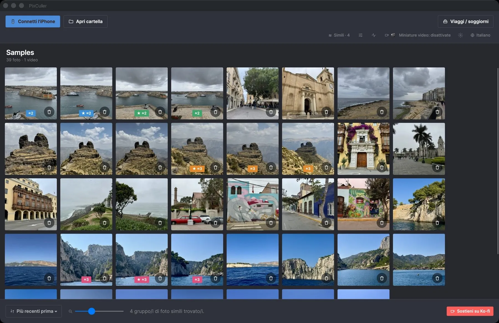
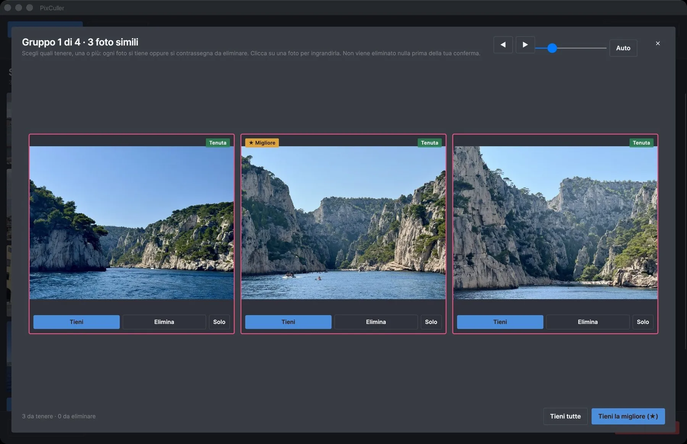
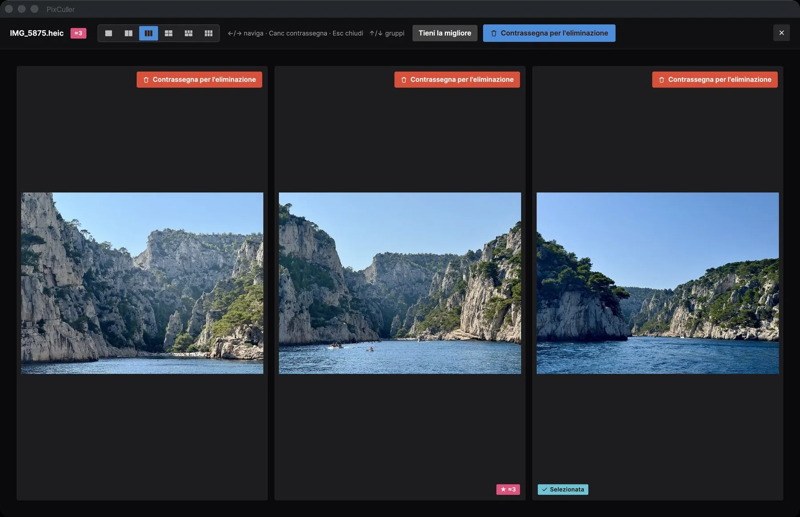
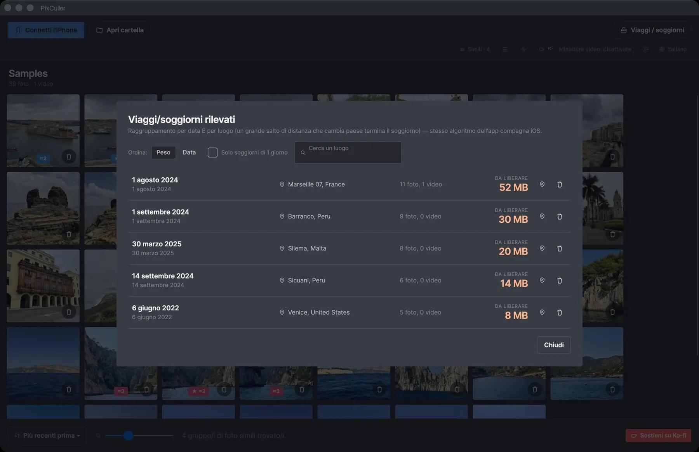
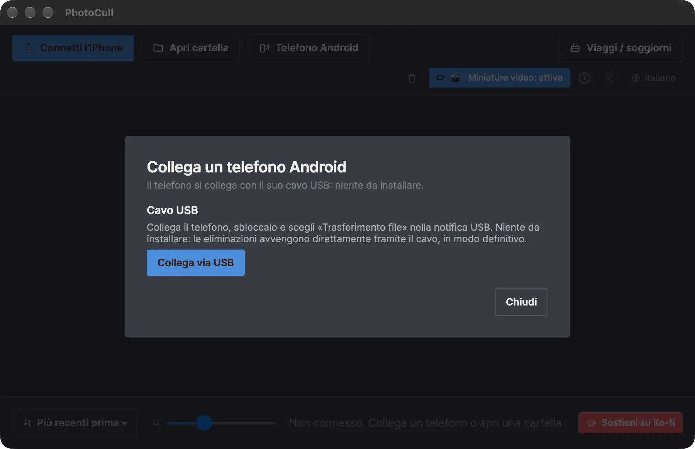

Ordina migliaia di foto di iPhone e Android su Mac o PC
PixCuller è un'applicazione desktop a tutti gli effetti: mostra l'intero rullino del tuo iPhone o telefono Android raggruppato per soggiorno, confronta le tue foto affiancate ed elimina in blocco ciò che non vale più la pena tenere — direttamente dal tuo Mac o PC.

Uno sguardo all'app




Collega il telefono in un minuto
Al primo avvio PixCuller chiede dove sono le tue foto e ti guida passo passo.
iPhone, via USB
Mac e Windows. Collega l'iPhone, sbloccalo e tocca «Autorizza», poi fai clic su «Connetti l'iPhone». Su Windows installa prima l'app gratuita Dispositivi Apple.
Android, via USB
Windows, e Mac con macOS 27 o successivo. Sblocca il telefono, collegalo e scegli «Trasferimento file» nella notifica USB, poi fai clic su «Telefono Android» e «Collega via USB». Niente da installare sul telefono.
Una cartella
Qualsiasi cartella del computer o di un disco: fai clic su «Apri cartella» o trascinala sulla finestra. Nessun telefono, nessun limite giornaliero.
Cosa fa l'app
Vista "Viaggi / soggiorni"
Tutta la tua libreria foto raggruppata automaticamente per soggiorno (tempo E luogo) — per individuare a colpo d'occhio i viaggi che occupano più spazio.
Confronto affiancato
Mostra fino a 6 foto simili contemporaneamente per scegliere la migliore — ideale per ordinare raffiche e quasi-duplicati.
Eliminazione in blocco, in tutta sicurezza
Contrassegna centinaia di foto in pochi clic. Su un iPhone o un telefono Android, PixCuller le elimina direttamente tramite il cavo USB e conserva per impostazione predefinita una copia sul computer per 30 giorni; in una cartella, finiscono nel Cestino. Dettagli e condizioni più sotto.
La dimensione che conta
Ordina e filtra per soggiorno di 1 giorno, per luogo escluso (casa, lavoro...), per dimensione — filtri pensati per la velocità.
Connessione diretta al telefono
Collega l'iPhone o il telefono Android con un cavo USB: PixCuller legge il rullino direttamente, senza cloud né server.
100% sul dispositivo
Nessuna foto, nessuna posizione GPS viene mai inviata altrove. Il riconoscimento dei luoghi funziona interamente in locale, senza account né abbonamento.
Gratis, davvero
Nessun abbonamento, nessun acquisto in-app, nessun account.
PixCuller
0 $
Sfoglia, confronta, ordina ed elimina, su un iPhone, un telefono Android o una cartella, senza limite giornaliero. Mac e Windows.
PixCuller funziona da solo: nessun'altra app da acquistare o installare.
Eliminare dal computer: iPhone e Android
iPhone: PixCuller elimina le foto direttamente tramite il cavo USB, senza limite giornaliero e senza nulla da acquistare. Funziona su qualsiasi PC Windows 10/11 e su un Mac con macOS 27 o successivo, con Foto di iCloud disattivato sull'iPhone (quando è attivo, Apple non consente questa eliminazione: disattivalo in Impostazioni > [il tuo nome] > iCloud > Foto, oppure elimina nell'app Foto dell'iPhone). L'eliminazione è immediata e definitiva sull'iPhone: le foto non passano da «Eliminati di recente». Per impostazione predefinita, PixCuller conserva per 30 giorni una copia di ogni elemento eliminato sul tuo computer, in una cartella «PixCuller Trash» dentro Immagini, così un errore si annulla importando di nuovo il file. Con macOS 26 o precedente, PixCuller mostra e ordina le foto dell'iPhone ma non può eliminarle: un banner nell'app lo indica, e le elimini nell'app Foto dell'iPhone.
Android: anche qui PixCuller elimina le foto direttamente tramite il cavo USB, su qualsiasi PC Windows 10/11 e su un Mac con macOS 27 o successivo, senza nulla da installare sul telefono. L'eliminazione è immediata e definitiva (le foto non passano dal cestino del telefono), con la stessa copia di 30 giorni sul computer. Nelle cartelle del Mac o del PC, i file vanno nel Cestino.
Guide per ordinare le tue foto dal computer
Come ordinare le foto dell'iPhone sul Mac
Ordina migliaia di foto dell'iPhone sul Mac: cosa fanno Foto e Acquisizione Immagine, e un metodo più rapido per raggruppare, confrontare ed eliminare.
Come ordinare le foto dell'iPhone su un PC Windows
Ordina migliaia di foto dell'iPhone su Windows 10 o 11: cosa mostrano l'app Foto ed Esplora file, e un metodo più rapido per ordinare ed eliminare.
Come ordinare migliaia di foto più in fretta su Mac o PC
Perché ordinare le foto su un grande schermo è molto più veloce che sul telefono, e un metodo semplice per esaminare migliaia di foto in una sola sessione.
Come liberare spazio su iPhone da un Mac o PC Windows
Collega il tuo iPhone, ordina le foto su un grande schermo ed elimina ciò che non ti serve, senza iCloud e senza inviare nulla online.
Come confrontare foto simili e tenere la migliore
Una routine semplice per scegliere lo scatto migliore tra foto quasi identiche: cosa guardare e come farlo in fretta su un grande schermo.
Come trovare foto duplicate e simili sul Mac
Trova copie esatte, raffiche e scatti quasi identici nelle cartelle di foto del Mac o su un disco esterno, tieni il migliore e sposta il resto nel Cestino.
Come trovare foto duplicate e simili su Windows 10 o 11
Trova copie esatte, raffiche e scatti quasi identici nelle cartelle di foto del PC o su un disco esterno, tieni il migliore e sposta il resto nel Cestino.
Come ordinare una grande cartella di foto, o un intero disco esterno
Vecchi backup, schede SD, un disco esterno pieno di foto: un metodo semplice per ordinare migliaia di file per viaggio ed eliminare le quasi copie.
Come ordinare le foto del tuo Android sul Mac
Da sempre un Mac fatica a leggere i telefoni Android via USB. Come ordinare migliaia di foto Android su un Mac con macOS 27 ed eliminare ciò che non serve.
Come ordinare le foto del tuo Android su un PC Windows
Ordina migliaia di foto Android su Windows 10 o 11: cosa mostrano Esplora file e l'app Foto, e un metodo più rapido per raggruppare, confrontare ed eliminare.
Come liberare spazio sul tuo telefono Android da un Mac o PC
Collega il tuo telefono Android via USB, ordina le foto su un grande schermo ed elimina ciò che non serve, senza Google One e senza caricare nulla online.